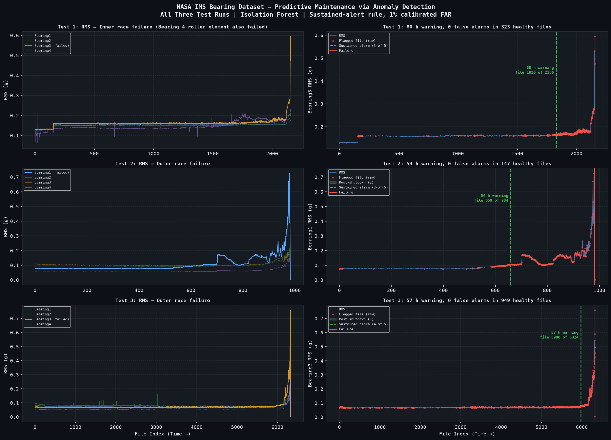

Predicting bearing failure before it happens
Unsupervised anomaly detection on three run-to-failure test rigs
A rolling-element bearing on a production line fails gradually and then suddenly. The question this project asks is narrow and answerable: using only vibration data, and without a single failure label, how much warning can you get — and what does that warning cost in false alarms?
Both halves matter. A detector that fires early is worthless if it also fires on healthy machinery, and most of the difficulty here turns out to be in the second half rather than the first.
What came out
| Test 1 | Test 2 | Test 3 | |
|---|---|---|---|
| Failed bearing | Bearing 3 | Bearing 1 | Bearing 3 |
| Failure mode | inner race (+ B4 roller) | outer race | outer race |
| Warning before failure | 79.5 h | 53.7 h | 57.0 h |
| Alert fired at file | 1,830 of 2,156 | 659 of 984 | 5,980 of 6,324 |
| Sustained rule selected | 3-of-5 | 3-of-5 | 4-of-5 |
| False alarms, held-out healthy data | 0 in 323 files | 0 in 147 | 0 in 949 |
Two and a half days of warning on the longest run, none of it bought with a false alarm on data the rule had never seen. The caveats are as important as the numbers and are stated with them throughout: zero is an upper bound on a rate, not a measured rate of zero — 147 to 949 healthy files cannot resolve anything below roughly 1 in 1,000. And Test 3 is the least stable of the three: tightening the calibrated false-alarm rate from 1% to 0.5% moves its lead time from 57 h to 26 h, while Tests 1 and 2 hold within an hour across that range.

The finding that changed the method
The obvious lead-time metric is “when did the detector first flag something?” On this data that metric is not merely noisy — it is structurally meaningless, and it can be shown to be:
| flagged files | first alert | implied lead | |
|---|---|---|---|
| Test 1 | 458 / 2,156 | file 0 | 827.6 h |
| Test 2 | 417 / 984 | file 0 | 163.8 h |
| Test 3 | 1,287 / 6,324 | file 0 | 1,073.3 h |
Every run alerts on its very first acquisition, so the “lead time” is just the length of the run. This is not a bug. IsolationForest(contamination=c) labels that fraction of its training set anomalous by construction, and the training set is the first 60% — the part assumed healthy. Measured flagged fractions of the training window: 5.03%, 5.08% and 8.01% against configured 0.05, 0.05 and 0.08.
So a usable number needs two things the naive metric lacks: a sustained-alert rule (k flagged files out of the last m, never a single window) and a score threshold calibrated on held-out healthy data rather than read off is_anomaly. How k and m are chosen without fitting them to a flattering answer is the subject of the method page.
Where to go next
- Method — defect-frequency features, why three of them point the opposite way to intuition, and how the alert rule is selected.
- Data — the dataset, and a documented discrepancy in it: the distributed archive holds 6,324 files for Test 3 where the official documentation says 4,448, and the failure lives entirely in the undocumented remainder.
- What it is worth — why lead time is not multiplied by an hourly rate, and what it is worth instead.
- Notebooks 01 · 02 · 03 · 04 — the analysis end to end.
Every number on this site is produced by code in the repository and traces to results/reports/business_summary.csv.